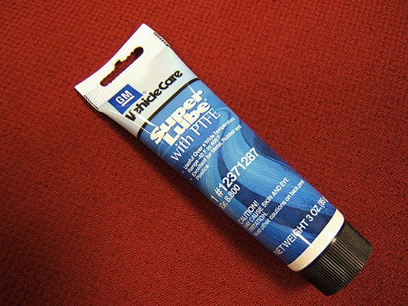
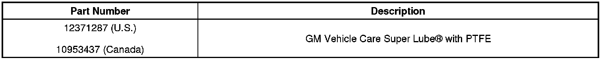

Body - Metal Body Panel Corrosion Protection
INFORMATIONBulletin No.: 03-00-89-008F
Date: April 24, 2012
Subject: Corrosion Protection for Metal Panels with Dealer Installed Accessories Fastened by Drilled Holes
Models:
2013 and Prior GM Passenger Cars and Trucks
Supercede:
This bulletin is being revised to update the model years. Please discard Corporate Bulletin Number 03-00-89-008E (Section 00 - General Information).
Corrosion Concerns
Frequently, dealer installed accessories, whether aftermarket or GM-approved, may require drilling holes into the body panels or supports to complete installation. Whenever you drill into a metal surface, the corrosion resistance of that panel is compromised. Testing was conducted to determine the best method used to protect the fastener-to-panel mounting holes from future corrosion. Several commercially available sealers and coatings were evaluated.
Recommendations

In all cases, GM Vehicle Care Super Lube(R) with PTFE performed the best at preventing corrosion in fastener to panel interface holes and is now the official GM recommended product as shown in the above illustration. It is recommended to apply the GM Vehicle Care Super Lube(R) with PTFE to any hole and fastener before installing the fastener into the drilled attaching hole or inside the metal panel.
Important
GM Vehicle Care Super Lube(R) with PTFE is the only product recommended and required by GM for the corrosion protection of metal panels where fasteners will be added to metal panels.

Parts Information

Disclaimer